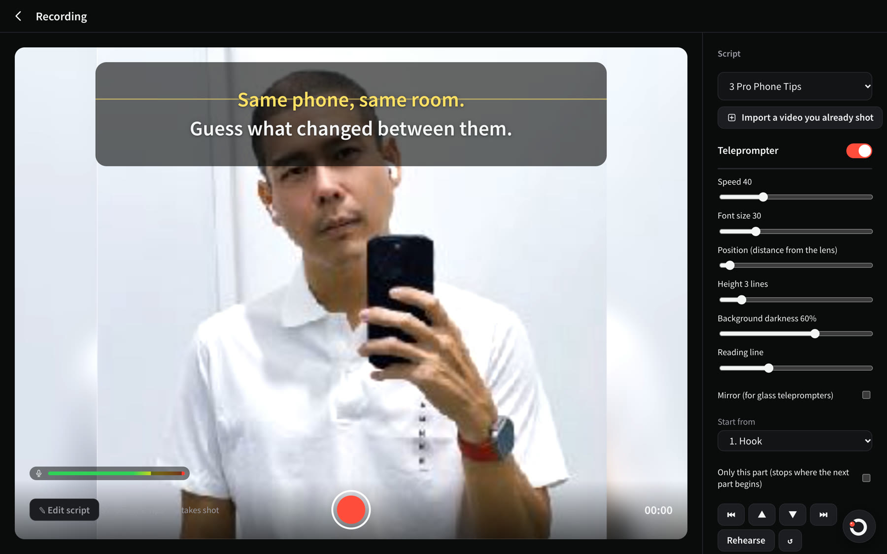

Onset 3.0
完全從零重寫、給內容創作者的個人工作室：寫腳本、拍攝、剪輯、做封面和貼文、AI 生成，都在同一個 App 裡。同一套程式做成 Mac App 和 iPhone / iPad App，彼此離線優先同步。每個畫面都有 AI Onset：它看得到畫面、會上網查資料、能用聲音對話，App 裡每一個功能它都能操作，而且一步一步做給你看，隨時可以停、可以整次復原。
一個 App，三種裝置Mac、iPhone、iPad 離線同步；人在外面也能連回家裡的 Mac。
AI Onset 助理每一頁都在。會看畫面、上網查資料、能用說的，並且一步一步做給你看，隨時可以停。
從腳本到成片AI 寫腳本、提詞器拍攝、CapCut 式剪輯、Auto-cut、自動字幕。
不拍也能做影片AI 找免費素材、本機與雲端生成、動態字、動畫畫板。
封面與貼文設計35 種版型，iPhone 不連 Mac 也能自己排版。
風格包與多語言整包帶走字幕、版型、字體和音樂；介面有 6 種語言。
全部功能（點開）
- Mac App 與 iPhone / iPad App（Tauri 2 + Swift）：一套程式三個外殼；手機上用 AVFoundation 輸出、Apple Speech 聽寫、Apple Vision 去背、Image Playground 生圖
- 同步與轉接站：掃 QR code 配對，離線優先、兩邊都改會保留兩個版本；在外面用 4G / 5G 也能經 Cloudflare Worker + Durable Objects 端對端加密連回家裡的 Mac
- AI Onset：每頁都在的 AI 助理，看得到螢幕和游標、會搜尋網路、能語音對話；所有功能集中在一份動作清單，可同時派 1–10 個 agent 分工，每個 agent 是一個彩色游標，飛到它正在改的地方
- MCP 一鍵安裝：Claude Desktop、Claude Code、ChatGPT / Codex、Cursor 等外部 AI 可直接操作 Onset，每一步都顯示在畫面上
- Create Script：AI 分六步寫給你看——角度、Hook、照風格寫初稿、平台檢查、口語化去 AI 味、風險檢查（醫療聲明、抄襲）；9 種格式、36 種風格
- Recording：會跟著聲音走的提詞器（5 種語言）、語音指令、藍牙遙控鍵、倒數；iPhone 可當 Mac 的鏡頭，或當遙控攝影機做多機位
- CapCut 式剪輯器：關鍵幀、39 種轉場、遮罩、LUT 與 HLG / Log → 709、變速曲線、20 種字幕與卡拉 OK、數十種飛字、Three.js / Godot 圖卡、內建免版稅音樂音效
- Auto-cut 與 AI Edit：一次聽完全片再剪、自動找重拍、逐章剪輯、章節卡、重點放大；長片自動切成多支 Shorts
- 數小時的多機位 Podcast：直接讀外接硬碟不複製、按聲音對齊、判斷誰在說話自動切鏡、輸出統一響度（−14 / −16 LUFS）
- 不拍，直接做：只有腳本也能出片，每一句都配畫面——AI 查資料找免費授權素材、補畫 AI 圖或做動畫圖卡；開始前先估總時間，做的時候顯示還要多久
- 動態字鏡頭：一拍一個大字、運鏡、轉場、3D 道具、假 App 畫面，可匯出到 EffectCraft
- 動畫畫板：AI 先規劃再畫出真正的插畫並加上骨架動起來；逐格動畫、圖樣重複、3D 立體字，也能手動接手修改
- AI 生成：本機（MiniMax H3 影片、Qwen Image、自己的 LoRA）加雲端 Higgsfield 和 Theater；Theater 先報價、同意才開始做
- 封面、貼文與包裝風格：35 種版型、弧形文字、輪播；頻道自己的片頭片尾、名字條、章節卡和水印；iPhone 不連 Mac 也能自己排版
- 風格包與外殼：一包帶走字幕、版型、字體、音樂，甚至換掉 App 名稱、圖示和顏色（Ed25519 簽章）；專案打包成 .onsetpack 分享
- 帳號與授權：Cloudflare Worker + D1 帳號服務，申請、審核、每台裝置授權；介面有繁中、簡中、英、馬來、日、韓 6 種語言
- 輸出：MP4 / MOV / MP3 / WAV，並可匯出 CapCut、FCPXML、Premiere XML、FilmCraft 工程檔
ReactTypeScriptViteNode helperFFmpegWhisperDemucsClaude CLITauri 2 / RustSwiftCloudflare Workers · D1 · Durable ObjectsMLX WhisperWebGL / Three.jsMCP


